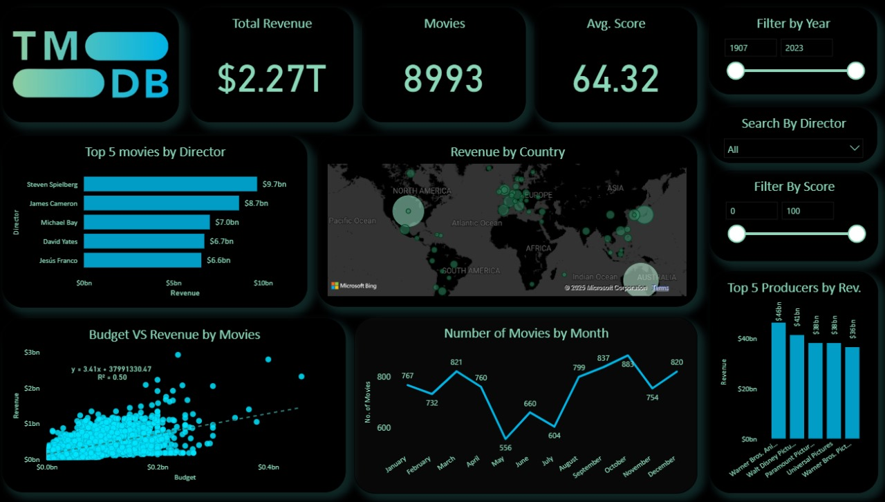

August, 2024
Trans Mountain Expansion
Throughput, Capacity & Barrels (2006–2020)

This dashboard visualizes oil barrels produced vs. producible, pipeline throughput vs. capacity over time, and trade direction. It highlights declining throughput in recent years despite large remaining production potential. Sankey and bar charts show regional trade and annual throughput variations.
Apportionment for Pipelines

Apportionment for Pipelines
Displays accepted vs. original oil shipment nominations across pipelines from 2006 to 2020. It shows which pipelines had the most apportionment and visualizes acceptance rates by year and line. Useful for understanding congestion and priority allocations in the network.
Product Throughput by Trade & Region

Product Throughput by Trade & Region
This dashboard breaks down throughput (1000 m³/d) by oil product types and trade direction from 2006 to 2020. Users can interact using buttons to filter by trade types like IntraCanada, Import, or Export. It highlights how different types of oil dominate throughput, especially in regions.
Sales Performance Dashboard

This dashboard segments customers based on sales volume, order frequency, and profit, helping identify high-value clients. It tracks profit and sales by region and category, with filters to drill down into Furniture, Office Supplies, or Technology. Time series and pie charts reveal monthly sales trends and how each product category contributes to overall revenue and profit. A great tool for understanding customer behaviour and optimizing regional and category-wise sales strategies.
TMDB Movie Analysis Dashboard

This dashboard analyses 8,993 movies with a total revenue of $2.27T, highlighting top directors, producers, average scores, and global earnings. It features interactive parameters, filtering by year, director, and score range, allowing dynamic and user-driven insights. Visuals include revenue vs. budget correlation, monthly movie releases, and regional revenue distribution. A powerful tool to explore trends in the global film industry with flexible parameter-driven filtering.
Feb, 2025
Disaster Analysis
Disaster Analysis – Focused on Earthquakes

This dashboard offers a global analysis of disasters, primarily earthquakes, covering average magnitude, depth, significance, and impact across 214 countries and 22K+ cities. It includes filters by magnitude, year, depth, and disaster type, helping users explore trends and severity over time. Visuals highlight time-of-day patterns, continent-level distribution, and correlations between magnitude, depth, and impact. Ideal for identifying seismic risk zones and understanding disaster behaviour across decades.